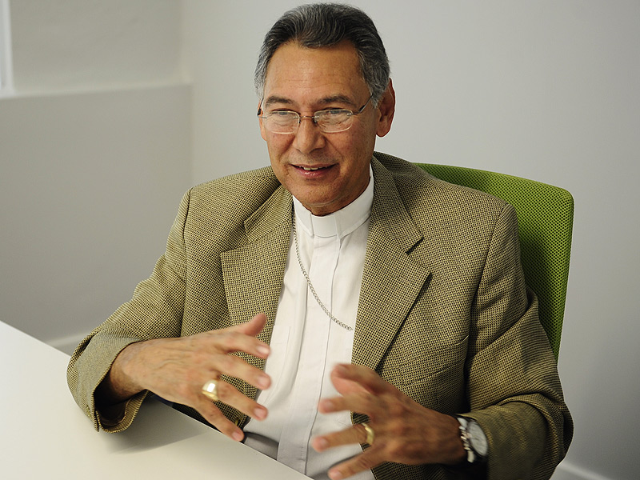

El obispo Juan Vera fue uno de los líderes del campamento ecuménico, establecido en reclamo por paz para Vieques. En la foto, Vera (izquierda) junto al reverendo Wilfredo Estrada son esposados durante el desalojo forzoso en mayo de 2000. (Archivo / El Nuevo Día)
El obispo Vera estuvo entre los arrestados el 4 de mayo de 2000. (Archivo / El Nuevo Día)
Vera habla al pueblo congregado en una protesta frente a la cárcel federal en mayo de 2001, mientras muchos desobedientes civiles como Rubén Berríos cumplían condenas por entrar a los terrenos ocupados por la Marina de Guerra. (Archivo / El Nuevo Día)
El obispo Vera camina junto al senador Eduardo Bhatia hacia el tribunal federal, para presenciar los juicios por desobediencia civil. (Archivo / Primera Hora)
A 10 años de la lucha por la Isla Nena, Vera, al igual que padre Pedro, se mantiene activo no solo desde el altar sino también en las luchas de justicia social. (Gerald López / El Nuevo Día)